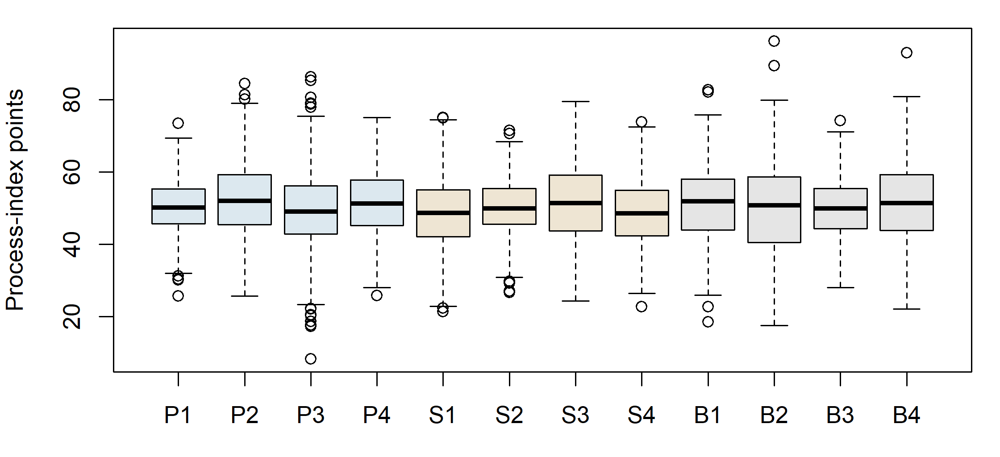
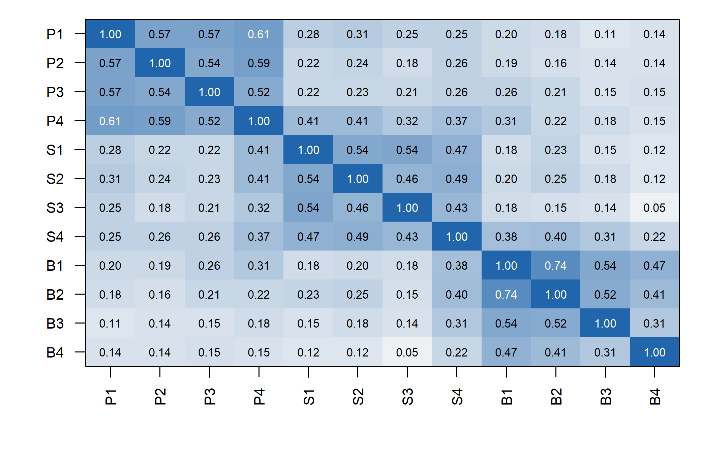
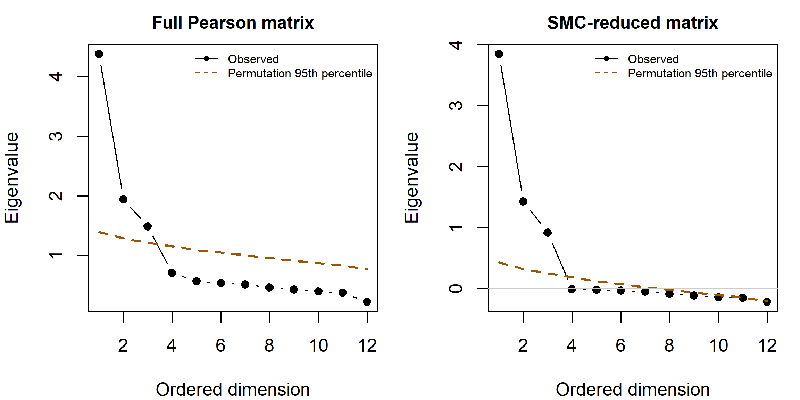
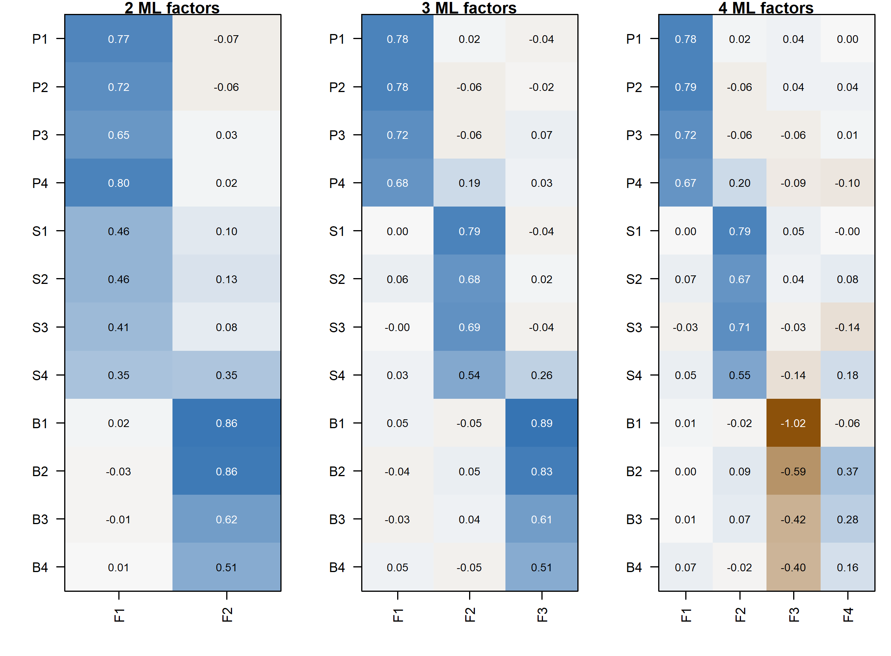
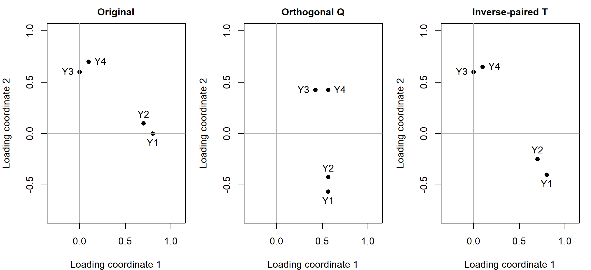
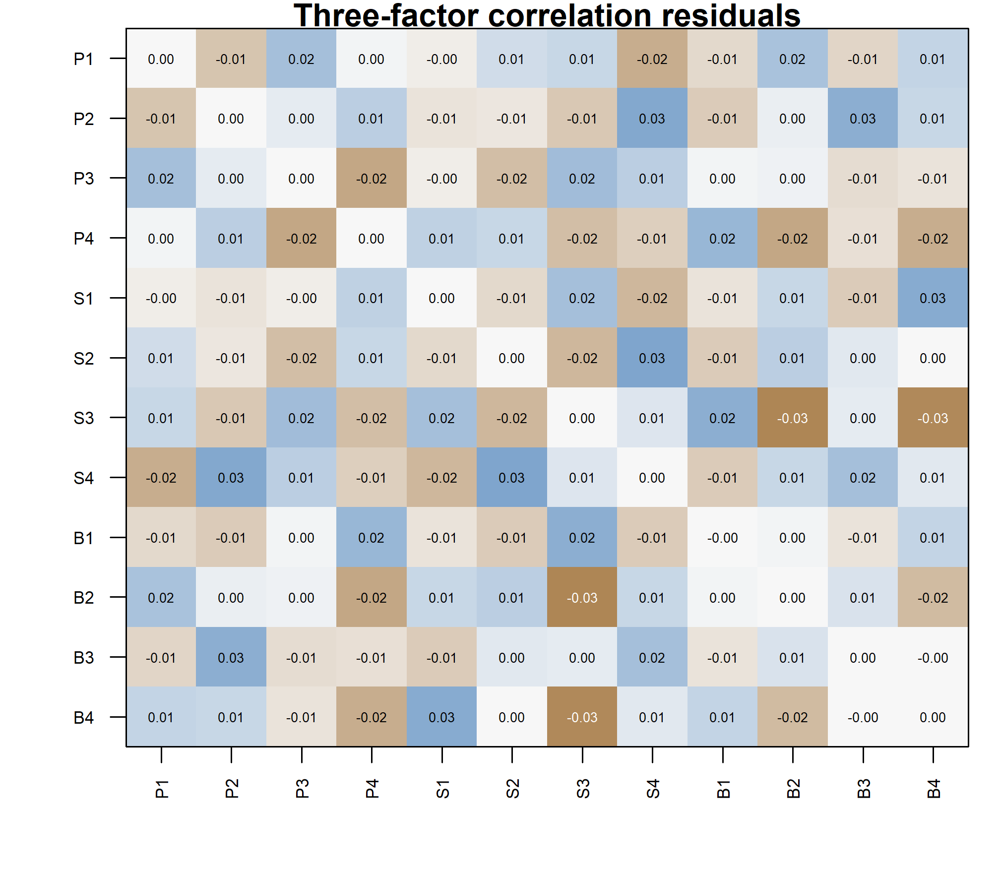

| item | domain | wording |
|---|---|---|
| P1 | Planning | I establish a study plan before beginning a task. |
| P2 | Planning | I identify which study tasks deserve attention first. |
| P3 | Planning | I compare my progress with the plan I made. |
| P4 | Planning | I revise my plan when a study method is not working. |
| S1 | Strategy | I change my learning strategy when understanding is weak. |
| S2 | Strategy | I select a learning method suited to the task. |
| S3 | Strategy | I revise my explanation after checking my understanding. |
| S4 | Strategy | I use discussion with others to improve my learning method. |
| B1 | Belonging | I feel accepted by other students. |
| B2 | Belonging | I feel able to join other students in learning activities. |
| B3 | Belonging | I feel able to express my views in class. |
| B4 | Belonging | I feel connected to the university as a whole. |
Exploratory Factor Analysis and Model Development
Contents
NoteChapter overview
The preceding chapter built a covariance matrix from parameters declared in advance. This chapter reverses the direction of work: a sample correlation matrix comes first, no simple model reproduces it exactly, and the number of dimensions, the orientation of the axes and the substantive names all have to be developed and defended. We audit twelve learning-experience indices before reading their correlations; compare what principal components, principal-axis factoring, minimum-residual extraction and maximum likelihood each answer; and decide how many common dimensions the matrix supports by holding each observed eigenvalue against a reference built from the same records with their pairings destroyed, and then against six further rules. We fit neighboring solutions, count how many parameters a factor model of each size really has, and choose axes by a declared rotation criterion rather than by whichever display looks tidiest. The rotated result is read as pattern coefficients, structure correlations, factor correlations and communalities together, and a residual correlation matrix then says where it strains, which an average residual cannot. The chapter closes by freezing one candidate specification and four named rivals for the confirmatory chapter that follows.
Sample A holds 360 complete, simulated continuous records on twelve Student Learning Experiences indicators. No observation concerns an actual student, and the two remaining samples are neither analyzed nor inspected here. You will need sample covariance and correlation, elementary matrix algebra, and the common-factor model, communalities, uniquenesses and scale and rotational indeterminacies developed in the preceding chapter; the printed matrices, equations and tables support the reasoning without running anything. Indicators are treated as continuous throughout Part Two, no restricted model is estimated, and no fit index is read as evidence for a construct: this is model development, not instrument validation or individual scoring.
By the end you will be able to carry out and report an exploratory factor analysis in which every diagnostic names what it was compared against, and to say why a development sample cannot confirm the model it was used to build.
A programme team writes twelve statements about how its students plan their study, adjust their methods when something is not working, and feel they belong, and collects responses from 360 people. The items were drafted under three headings, and the team would like to report three scores. The correlations, when they arrive, are less obliging. Some planning items move with strategy items about as strongly as with one another, one belonging item keeps company that the other three do not, and nothing in the matrix announces how many attributes produced it. Naming the three visible blocks and stopping there would answer a question nobody asked. This is the ordinary position of anyone who has just collected questionnaire data, and it is where this chapter starts.
The guiding question is therefore: what common-factor representation of these twelve indicators is defensible on the records that produced it, and what would it take to confirm one? The first half is answered here, on one development sample, with every step stating what it was compared against. The second half cannot be answered here at all. A representation developed by inspecting these observations has used them up, so the chapter ends by writing down a specification precise enough for records that have not been inspected to evaluate.
1 Define the exploratory measurement problem
Chapter 1 began with known loadings and factor covariances and worked forward to an implied covariance matrix. Here the direction of work changes. We observe a sample of indicator values, calculate their associations, and ask which common-factor representation is defensible. The observed correlations fluctuate from sample to sample. Their pattern does not arrive with a factor count, a preferred rotation, or substantive names attached. Those have to be developed and documented.
Exploratory factor analysis, or EFA, leaves most loading restrictions open while seeking a comparatively low-dimensional representation of shared covariation. It is not a procedure with no assumptions. Selecting the indicators, defining the population, choosing an association matrix, restricting residual covariance, considering a range of dimensions, and choosing rotation criteria all shape what the analysis can reveal. A carefully designed exploratory study therefore has substantial work to do before an extraction routine runs.
The distinction between a provisional representation and a confirmed restriction is important from the outset. Suppose an EFA suggests that an indicator of adaptive planning also relates to strategy adjustment. That can be a useful discovery. It is not evidence that a cross-loading specified after seeing these observations was predicted before them. The later CFA can evaluate the resulting restriction on unused data, but changing the name of the fitting function does not change the history of the decision.
1.1 The common-factor model is not restriction-free
For person or observational unit \(i\), retain Chapter 1’s notation:
\[ \mathbf y_i=\boldsymbol\nu+\boldsymbol\Lambda\boldsymbol\eta_i +\boldsymbol\epsilon_i,\qquad \boldsymbol\Sigma=\boldsymbol\Lambda\boldsymbol\Phi \boldsymbol\Lambda^{\mathsf T}+\boldsymbol\Theta. \tag{1}\]
There are \(p\) indicators and \(m\) factors. Thus \(\boldsymbol\Lambda\) is \(p\times m\), \(\boldsymbol\Phi\) is \(m\times m\), and \(\boldsymbol\Theta\) and \(\boldsymbol\Sigma\) are \(p\times p\). The factor-residual covariance is zero. Classical EFA initially makes \(\boldsymbol\Theta\) diagonal: remaining indicator-specific variation does not covary across indicators. That restriction can be wrong even when most loadings are freely estimated.
The loading pattern is initially open, but its dimension is not. A two-factor and a three-factor EFA are different covariance models. Scale restrictions are also necessary. One convenient extraction representation uses unit-variance, uncorrelated factors; a subsequent oblique transformation expresses the same common covariance using correlated axes. Orthogonality at this computational stage does not establish independence of substantively named attributes.
The latent intercept \(\boldsymbol\alpha\) equals the factor mean in this model without structural paths or separate predictors. It remains an intercept symbol throughout Part Two. Likewise \(\boldsymbol\Phi\) denotes total factor covariance, not residual covariance and not the later structural-disturbance matrix. These distinctions prevent the same letter from silently changing meaning between EFA, CFA, and SEM.
1.2 A twelve-indicator content record
The sustained example concerns Student Learning Experiences (SLE). The proposed domains are Planning, Strategy, and Belonging. These names organize the starting content questions; they do not determine how many factors Sample A will support. All twelve variables are explicitly simulated continuous process indices. Their units are index points, not response categories, percentages, or counts. The statements below clarify intended content, but they are not presented as an administered and validated questionnaire.
P4 concerns changing a plan when a learning method fails. S4 concerns using discussion with others to improve a learning method. Their content already suggests possible overlap between domains. A cross-loading would not automatically make either indicator defective. Conversely, clear wording does not guarantee that its covariance pattern will match the intended domain.
The twelve columns have different raw dispersions. All are coded so that larger values mean more of the stated attribute, and none is reverse-scored. The simulation imposes neither missing observations nor response limits. Its unbounded normal records are a deliberate teaching design, not a claim that actual student experiences are normally distributed or measured without limits.
Download sle_continuous.csv, the only SLE data file needed for the examples. The SLE data appendix contains the complete codebook and sample manifest. Its sample column identifies three independent 360-case samples, not three groups to pool. Select A before inspecting indicators or calculating statistics in this chapter. Population parameters are documented in Appendix A, separate from the learner-facing analysis: knowing the recipe is not a substitute for reasoning from Sample A. No empirical summary, correlation, factor solution, or fit statistic from B or C has been used to make the decisions reported here.
Three possible actions will matter when we interpret the factor evidence: retain an indicator for a stated use, delete it from the proposed measurement system, or redesign its wording or observation procedure and collect new responses. Each changes a different part of the study. We will compare those choices after reading the oblique solution, while keeping all twelve indicators in the fitted analyses and the declared A/B/C sequence.
1.3 Check the indicators before interpreting correlations
Data examining is part of defining the statistical input. An unintended reverse code can change signs. A nearly constant indicator can make a correlation unstable. Duplicate records alter the apparent amount of information. Pairwise deletion can produce different effective samples for different correlations, and sometimes a matrix that is not positive definite. None of these problems is repaired merely by rotating a loading matrix until it looks recognizable.
| Item | Mean | SD | Min | Max | Skew | Missing |
|---|---|---|---|---|---|---|
| P1 | 50.272 | 7.934 | 25.762 | 73.423 | -0.046 | 0 |
| P2 | 52.758 | 10.202 | 25.661 | 84.472 | 0.261 | 0 |
| P3 | 49.024 | 12.124 | 8.276 | 86.271 | -0.080 | 0 |
| P4 | 51.444 | 9.364 | 25.878 | 75.068 | 0.050 | 0 |
| S1 | 48.592 | 10.170 | 21.388 | 75.017 | 0.002 | 0 |
| S2 | 50.277 | 7.808 | 26.681 | 71.478 | -0.117 | 0 |
| S3 | 51.280 | 10.910 | 24.323 | 79.540 | 0.019 | 0 |
| S4 | 48.086 | 8.703 | 22.764 | 73.885 | -0.175 | 0 |
| B1 | 51.260 | 10.074 | 18.589 | 82.734 | 0.024 | 0 |
| B2 | 49.624 | 12.604 | 17.600 | 96.232 | -0.077 | 0 |
| B3 | 50.091 | 8.250 | 28.044 | 74.260 | 0.072 | 0 |
| B4 | 51.504 | 11.296 | 22.143 | 92.913 | 0.162 | 0 |
There are 360 distinct rows, no missing values, and positive variance in every indicator. The minimum eigenvalue of the Pearson matrix is 0.223, so its inverse exists without matrix repair. This is a useful computational check, not evidence that the factor model is true. Normal-theory ML also needs an appropriate sampling and distributional interpretation. The simulation supplies independent normal factor/residual draws; a real study would have to justify or investigate those assumptions.

In an actual application, an unusual observation deserves examination of provenance and measurement, not automatic removal because it makes normality less convenient. A miscoded value, a genuine extreme case, and a member of another target population call for different actions. Any exclusion changes the estimand’s population or the analyzed record and must be described. Here no item or case is removed. That keeps the same twelve-variable target available for later confirmatory comparisons.
2 Choose the matrix and extraction target
2.1 Covariance and correlation answer different scaling questions
Let \(\mathbf S\) denote the ordinary sample covariance matrix computed with denominator \(n-1\), and let \(\mathbf D_S=\operatorname{diag}(s_{11},\ldots,s_{pp})\). The Pearson correlation matrix is
\[ \mathbf R=\mathbf D_S^{-1/2}\mathbf S\mathbf D_S^{-1/2}. \tag{2}\]
This operation divides each covariance by the two sample standard deviations. It does not remove dependencies, correct measurement error, or make a nonnormal distribution normal. It changes the units in which the association structure is represented. Covariance-scale analysis preserves raw variances; correlation-scale analysis gives each observed variable a unit diagonal.
Our primary analysis uses \(\mathbf R\). The rationale is that the process-index dispersions are not intended to set the relative weight of the content domains. Raw \(\mathbf S\), means, and standard deviations are retained, however. Later CFA fits raw observations, and an explicit scale transformation connects those fits with this standardized EFA. No variable is replaced by an ordinal score or a new construct along the way.
The observations are synthetic samples generated from a prespecified continuous latent-variable population, and the exact released records are distributed as sle_continuous.csv. Throughout this chapter the analysis runs on Sample A alone: its 360 rows of twelve indicators, taken from that file in codebook order, and their Pearson correlation matrix \(\mathbf R\). For these complete observations, standardizing the covariance matrix gives the same Pearson matrix as direct calculation. That identity checks the transformation, not the suitability of Pearson correlation for every dataset. Numeric codes for categories would require a separate measurement treatment; that topic belongs to other courses or later series. Categorical group labels and coded predictors remain possible in later multigroup or MIMIC work. This brief boundary introduces no categorical-estimator track here.

The broad blocks are suggestive, not conclusive. A correlation between a Planning and a Strategy indicator might arise from correlated factors, a cross-loading, residual dependence, or some combination. The same visible association can therefore be represented by different restrictions. The task is not to give each colored block a name and stop; it is to evaluate a coherent factor representation of the matrix.
2.2 PCA: a decomposition of total observed variance
For a symmetric positive-definite correlation matrix,
\[ \mathbf R=\mathbf V\mathbf D\mathbf V^{\mathsf T},\qquad \mathbf V^{\mathsf T}\mathbf V=\mathbf I, \tag{3}\]
where the columns of \(\mathbf V\) are orthonormal eigenvectors and \(\mathbf D=\operatorname{diag}(d_1,\ldots,d_p)\) contains ordered eigenvalues. A rank-\(m\) PCA reconstruction uses
\[ \mathbf A_m=\mathbf V_m\mathbf D_m^{1/2},\qquad \widehat{\mathbf R}_{\mathrm{PCA},m}=\mathbf A_m\mathbf A_m^{\mathsf T}. \tag{4}\]
The full decomposition is exact; a truncated one generally is not. PCA chooses directions of high observed variance. Component scores are weighted functions of observed variables, not unobserved random variables whose common contribution is separated from item residuals. Calling \(\mathbf A_m\) a loading matrix in software does not change that distinction.
The first three Sample A component eigenvalues sum to 7.809, or 65.073% of the twelve units of standardized observed variance. This is a PCA summary. It is not the common variance attributed to three latent factors by the ML model. The two summaries can differ because their objectives differ, even when their broad dimensional patterns look similar.
PCA may be appropriate when compact prediction, compression, or a descriptive orientation is the objective. The problem is not using PCA; it is interpreting its output as if a common-factor measurement model had been estimated. A method should be judged against the task it actually solves.
2.3 Principal-axis factoring: estimate the diagonal contribution
Principal-axis factoring, or PAF, works with a reduced correlation matrix. At iteration \(t\), replace the unit diagonal by estimated communalities:
\[ \mathbf R_c^{(t)}=\mathbf R- \operatorname{diag}(1-\widehat{\mathbf h}^{2(t)}). \tag{5}\]
Decompose this matrix, use its leading positive eigenvalues to form a provisional loading matrix, and update the communalities from its row sums of squared loadings in an orthogonal representation. Repeat until a declared rule indicates sufficiently small changes. The initial diagonal, handling of nonpositive roots, and stopping rule are implementation choices, not properties of factor analysis itself.
One common initialization is the squared multiple correlation of each variable with the remaining variables. This quantity is the squared multiple correlation, written SMC throughout: for indicator \(j\) it is the \(R^2\) from regressing \(Y_j\) on all eleven other indicators, so it says how much of that indicator the rest of the set can already account for. For nonsingular \(\mathbf R\),
\[ \widehat h_{j,0}^{2}=1- \frac{1}{(\mathbf R^{-1})_{jj}}. \tag{6}\]
These are regression summaries of the observed matrix, not known common variances. They can underestimate some true communalities and can be unstable when predictors are highly redundant. They provide a starting point, not an answer to the factor-count question.
| Item | SMC | First update |
|---|---|---|
| P1 | 0.496 | 0.576 |
| P2 | 0.458 | 0.535 |
| P3 | 0.424 | 0.494 |
| P4 | 0.550 | 0.616 |
| S1 | 0.455 | 0.545 |
| S2 | 0.409 | 0.483 |
| S3 | 0.369 | 0.439 |
| S4 | 0.410 | 0.472 |
| B1 | 0.637 | 0.720 |
| B2 | 0.599 | 0.665 |
| B3 | 0.335 | 0.383 |
| B4 | 0.243 | 0.271 |
For P1, the SMC start is 0.496 and the first updated communality is 0.576. Repeating that update would change the reduced diagonal again. This explains why a PAF root is not automatically the same as a root of the original unit-diagonal correlation matrix.
2.4 Minimum residual and maximum likelihood extraction
Minimum-residual extraction seeks small discrepancies between observed and reproduced off-diagonal correlations. A representative objective is
\[ F_{\mathrm{minres}}= \sum_{j<k}\left[r_{jk}-(\boldsymbol\Lambda\boldsymbol\Phi \boldsymbol\Lambda^{\mathsf T})_{jk}\right]^2. \tag{7}\]
The diagonal residual variances then complete the observed variances. This criterion gives the same squared-error weight to each displayed off-diagonal discrepancy. Software algorithms can differ in numerical details; the objective, convergence criteria, and resulting covariance still need to be checked. PAF and minres are both common-factor approaches, but they are not names for the same algorithm.
The primary method here is maximum-likelihood common-factor extraction. For an observed covariance matrix \(\mathbf S\) and a positive-definite model-implied covariance \(\boldsymbol\Sigma(\boldsymbol\vartheta)\), the normal-theory discrepancy can be written
\[ F_{\mathrm{ML}}(\boldsymbol\vartheta)= \log|\boldsymbol\Sigma(\boldsymbol\vartheta)| +\operatorname{tr}\!\left[\mathbf S\boldsymbol\Sigma(\boldsymbol\vartheta)^{-1}\right] -\log|\mathbf S|-p. \tag{8}\]
Here \(\boldsymbol\vartheta\) collects free parameters; it is not the residual matrix \(\boldsymbol\Theta\). The determinant terms measure covariance volume, while the trace term measures discrepancy relative to the model’s covariance geometry. The two sample-only terms set the discrepancy to zero for exact reproduction. Minimization chooses parameter values under the model’s restrictions, rather than choosing a covariance matrix independently of them.
The same expression applies to our correlation-scale analysis with \(\mathbf R\) in place of \(\mathbf S\). Under freely rescalable loadings and residual variances, transforming observed units has a corresponding parameter transformation. This does not mean every arbitrary constraint is invariant to units. Equal unstandardized loadings, for example, must be re-expressed when the indicators change scale.
Normal ML supplies a distributional framework for standard errors and test statistics when its assumptions and regularity conditions hold. Independent observations, a suitable population sampling interpretation, identification, and admissible covariance matrices matter. Good-looking loadings cannot supply any of these by themselves. Numerical convergence only says that the optimizer met a stopping rule; it does not show that the fitted representation is adequate or that the solution is uniquely identified.
| Method | Immediate target | What the output does not establish |
|---|---|---|
| PCA | Low-rank reconstruction of total observed variance | A latent measurement decomposition |
| PAF | Iterative reduced-matrix factor representation | A universal diagonal start or stopping tolerance |
| Minres | Small off-diagonal squared residuals | Normal-likelihood inference without additional work |
| ML factor analysis | Best normal likelihood within the factor model | Substantive truth, validity, or acceptable fit merely from convergence |
The maintained sequence is therefore Pearson correlations, ML extraction, and oblimin rotation. Minres is a bounded sensitivity comparison on the same matrix. The later CFA uses the same continuous ML family; it is not a transition from one response model to another.
3 Determine a plausible factor count
3.1 Underfactoring and overfactoring have different costs
Too few factors force distinctions into an inadequate space. Indicators of an omitted dimension can acquire misleading loadings on the retained dimensions, factor correlations can shift, and structured residuals can remain. Too many factors can divide one broad pattern into weak or unstable directions, make residual variances approach a boundary, and encourage names for sample-specific features. Adding a dimension is not free just because numerical reconstruction improves.
Retention is therefore a question about the representation to carry forward, not a race to maximize variance accounted for. We consider one through five factors before examining the results. Three is a content-based expectation, not a required outcome of the analysis. The full range is retained in the record even when neighboring models give inconvenient results.
3.2 Specify the matrix whose eigenvalues are being read
A spectral eigenvalue satisfies
\[ \mathbf R\mathbf v_k=d_k\mathbf v_k. \tag{9}\]
Its meaning depends on the matrix. Eigenvalues of the full Pearson matrix include all standardized observed variance and sum to \(p\). Eigenvalues of an SMC-reduced matrix use a different diagonal and need not all be positive. An estimated common covariance has yet another spectrum. A printed column headed “eigenvalue” must therefore be interpreted alongside the software’s construction of that column.
The post-rotation column statistic
\[ SS_k=\sum_{j=1}^p\lambda_{jk}^2 \tag{10}\]
is an SS loading, not generally a spectral eigenvalue. In suitable unrotated orthogonal decompositions these quantities coincide; after rotation the column allocation can change while common covariance stays fixed. With correlated factors, pattern-column SS values do not provide a unique additive partition of common variance. Chapter 1’s rotated two-factor example already demonstrated the simpler orthogonal version of this distinction.
3.3 Scree and the eigenvalue-greater-than-one heuristic
The familiar Kaiser–Guttman heuristic retains roots above one in a unit-diagonal correlation analysis. It compares a component’s variance with one observed standardized variable’s variance. Sampling variation alone can create roots above one, so this is neither a necessary condition for a useful common factor nor a reliable stand-alone count. Applying the same threshold to a reduced matrix changes the comparison and should not be treated as an interchangeable implementation.
A scree plot instead asks where large decreases give way to a flatter sequence. It can reveal a distinct elbow, multiple plausible elbows, or no clear break. The method involves judgment: a visually appealing elbow does not supply a sampling reference. Full- and reduced-matrix plots need not agree, even when they do in the present example.
In Sample A, the first three full-matrix roots are 4.380, 1.942, 1.487, followed by 0.705. That drop makes three a plausible candidate. It becomes more informative when compared with what equally sized data containing no cross-variable dependence would produce.
3.4 Parallel analysis compares against a matched null
The leading eigenvalues reported just above are comfortably greater than one. That is not by itself evidence of anything, because random data behave the same way. Correlate twelve unrelated variables in a sample of 360 and the largest eigenvalue will still exceed one, simply because sampling noise produces some correlations by chance and the leading eigenvalue collects whatever structure happens to be there. The question a retention rule has to answer is not “is this eigenvalue large?” but “is it larger than chance alone would produce, in a dataset of exactly this shape?”
Parallel analysis answers that question directly (Buja & Eyuboglu, 1992; Horn, 1965). It builds datasets that have no common factors but match the real one in the two respects that govern the size of a chance eigenvalue - the sample size and the empirical marginal distribution of each variable - computes their eigenvalues, and uses those as the yardstick. A dimension is retained while the observed eigenvalue stands above what the no-factor datasets produced at the same rank.
Building the null. The trick is to destroy the relationships between indicators while leaving everything else alone. Independently shuffling each column does exactly that. After shuffling, item P1 still has its own 360 values, its own mean, spread and skew - but which respondent’s P1 sits beside which respondent’s S3 is now arbitrary, so any correlation between them is accidental. Repeating this many times gives a distribution of eigenvalues under “same items, same sample size, no common structure.”
Choosing the threshold. We compare each observed eigenvalue with the 95th percentile of its null distribution, not the mean:
\[ d_k^{\mathrm{observed}}> Q_{.95}\{d_{k,1}^{\mathrm{null}},\ldots,d_{k,B}^{\mathrm{null}}\}. \tag{11}\]
The difference matters. The mean is a central summary of the null distribution, so an eigenvalue only a little above it clears the bar; the 95th percentile asks the eigenvalue to exceed all but the most extreme five per cent of chance results. The percentile reference is the more stringent of the two and generally retains no more dimensions than the mean, though which performs better depends on the population, the sample size and the strength of the factors. They are two different decision rules, not two labels for one.
Counting. We retain the leading consecutive run of dimensions that clear their references, and stop at the first that does not. Without that rule, an isolated crossing among the small trailing eigenvalues - where observed and null curves nearly coincide and either may edge ahead - would be counted as a further meaningful dimension.
Table 5 records the choices that would change the answer if made differently; anyone rerunning the analysis needs all four.
| Choice | Value used here | Why it matters |
|---|---|---|
| Null construction | Independent within-column permutation, without replacement | Preserves each item’s own distribution while removing between-item structure |
| Matrix compared | Pearson correlations, computed the same way for observed and null | Comparing an observed correlation matrix with a null covariance matrix is not a like-for-like test |
| Reference | 95th percentile | The mean retains more dimensions; the choice is a decision rule, not a detail |
| Replications and seed | 100, seed 12345 | Enough for a stable retained count in this example; the seed makes that count reproducible |
A short note on implementation, because a function name can hide the rule it applies. The installed psych version’s fa.parallel(sim = FALSE) resamples each column with replacement, which is a bootstrap rather than the permutation described above. Both are defensible null constructions, but they are not the same one, so this chapter builds its reference directly rather than calling that option.
One replication shuffles each of the twelve columns independently and without replacement, correlates the shuffled columns, and keeps the twelve eigenvalues of that correlation matrix. A hundred replications, drawn from seed 12345, give a 12-by-100 array of null roots, and the reference at each rank is the 95th percentile of its row under the type-7 quantile definition. A hundred replications is ample here - going to a thousand moves the reference values by about \(.01\) and changes no retained count.
Two targets, two panels. Figure 3 runs this comparison twice, and the difference between its panels is the diagonal of the matrix being decomposed. The left panel uses the full Pearson matrix, whose diagonal is all ones: its eigenvalues describe total standardized variance, which is what a principal component analysis decomposes. The right panel replaces that diagonal with SMCs before taking eigenvalues, so it describes only the variance each indicator shares with the others - closer to what a common-factor model tries to explain. Reduced-matrix eigenvalues are smaller, and the later ones can be negative, which is why the two panels have different vertical scales and why an observed curve must only ever be read against the reference drawn beside it. The same diagonal rule is applied to every permuted matrix as well, so each panel is an internally consistent comparison.

| Dimension | Component | Component 95 | Factor | Factor 95 |
|---|---|---|---|---|
| 1 | 4.380 | 1.389 | 3.849 | 0.433 |
| 2 | 1.942 | 1.285 | 1.430 | 0.318 |
| 3 | 1.487 | 1.212 | 0.918 | 0.250 |
| 4 | 0.705 | 1.152 | -0.010 | 0.189 |
| 5 | 0.566 | 1.092 | -0.021 | 0.123 |
Both comparisons retain a leading run of three dimensions. For the third component root, 1.487 exceeds 1.212; for the fourth, 0.705 does not exceed 1.152. The reduced-matrix comparison reaches the same count by a different set of numerical comparisons. Agreement makes the candidate less dependent on this particular diagonal choice, but does not turn the procedure into a proof that three substantive attributes exist.
PA addresses a matched null reference, not every plausible alternative population. Factor correlations, weak factors, minor dimensions, sample size, and the chosen root algorithm can change its performance. It should be read alongside content, neighboring solutions, and residuals.
3.5 A wider family of retention rules
Retention is the decision an exploratory analysis most often gets wrong, and the familiar heuristics are among the weaker available options. Auerswald & Moshagen (2019) compared the main extraction criteria across realistic conditions - correlated factors, unequal loadings, minor factors, non-normal responses, varying sample sizes - and found the eigenvalue-greater-than-one rule and the unaided scree plot performing poorly enough that neither should carry a retention decision alone. Several better-behaved alternatives exist, and they are worth knowing not as a longer checklist but because each states a different reference, and knowing the reference is what lets a disagreement be interpreted.
Parallel analysis is a family, not a method. Two choices generate four distinct procedures. The roots may come from the full Pearson matrix, as in a component analysis, or from a reduced matrix with communality estimates on the diagonal, closer to the common-factor model. The null reference may be the mean of the simulated roots or their 95th percentile. Across Auerswald & Moshagen (2019)’s conditions the component-based versions generally outperformed the reduced-matrix versions, and the mean reference tends to retain more dimensions than the percentile reference. All four share one structural weakness: the reference data are uncorrelated by construction, so after a strong first factor has absorbed much of the observed covariance, the comparison for the second and later roots is no longer like for like, and a genuine second dimension can be missed.
The empirical Kaiser criterion repairs the Kaiser–Guttman rule rather than discarding it (Braeken & van Assen, 2017). Under the null model the sample eigenvalues of uncorrelated variables are described asymptotically by a Marchenko–Pastur law whose upper bound is \((1+\sqrt{p/n})^2\); this is the reference for the first root. Later roots are corrected for the variance already accounted for, and the reference is never allowed below one:
\[ \text{EKC}_j=\max\!\left\{(1+\sqrt{p/n})^{2}\, \frac{p-\sum_{i<j} d_i}{p-j+1},\; 1\right\}. \tag{12}\]
With \(p=12\) and \(n=360\) the first reference is 1.398, appreciably above one: a leading root of \(1.1\) would satisfy Kaiser–Guttman and fail the EKC. From the second root onward the correction term falls below one in this record, so the floor applies and the remaining references equal one. The criterion is therefore stricter than Kaiser–Guttman at the first root and identical afterwards - here, on this data, which is exactly the sort of detail that a printed count conceals.
Sequential model tests use the exact-fit statistic rather than an eigenvalue. Fit a one-factor model; if its test is significant, fit two, and continue until a test is not significant. The logic is clean, but it carries a caveat worth stating: once the number of factors exceeds the true number, the regularity conditions behind the \(\chi^2\) reference fail, so the sequence is only trustworthy while it is still under-fitting. An earlier test that was significant by chance therefore propagates into further over-extraction rather than being corrected.
Two further methods appear in the comparison literature, though neither is computed here. The Hull method chooses the count at which the balance between fit and number of parameters stops improving, borrowing the convex-hull idea from model selection (Lorenzo-Seva et al., 2011). Comparison data generates reference datasets that reproduce the observed correlation matrix under a known factorial structure of \(1,2,3,\ldots\) factors, rather than under independence, and retains the smallest count whose reference data resemble the observed data (Ruscio & Roche, 2012). Both address the same weakness in parallel analysis: an uncorrelated null is not the relevant comparison once one factor is granted.
Table 7 applies seven of these rules to the present record. The four parallel-analysis rows share the same permutation replications, so they differ only in the target matrix and the reference statistic; Kaiser–Guttman, the empirical Kaiser criterion and the sequential tests use no permutations at all, and are included because they answer the same question from different premises.
| Rule | Reference | Retained |
|---|---|---|
| Kaiser-Guttman | Root exceeds 1 | 3 |
| Empirical Kaiser criterion | Root exceeds a sample-adjusted bound, floored at 1 | 3 |
| PA, component roots, mean | Root exceeds the mean null root | 3 |
| PA, component roots, 95th | Root exceeds the 95th-percentile null root | 3 |
| PA, reduced roots, mean | Reduced root exceeds the mean null reduced root | 3 |
| PA, reduced roots, 95th | Reduced root exceeds the 95th-percentile null reduced root | 3 |
| Sequential chi-square tests | First non-significant exact-fit test | 3 |
Every rule returns three. That agreement is a fact about this record, not a general property of the methods, and it is what a well-behaved simulated population with three clearly separated factors is expected to produce. Real records disagree often, which is why Auerswald & Moshagen (2019) recommend combination rules rather than any single criterion: when sequential model tests agree with either the 95th-percentile component parallel analysis or the empirical Kaiser criterion, the pair identified the correct count with high consistency across their conditions. Sequential tests perform well with highly correlated factors but over-extract in the presence of minor factors and under non-normality; the other two are robust and do not over-extract, which is why they pair well.
The value of a combination rule is not that it counts votes. It is that disagreement is informative: when these criteria diverge, the dimensions are genuinely hard to detect in the available evidence, and the appropriate response is usually more data or a narrower claim rather than a casting vote. A majority vote among heuristics cannot replace explaining what each diagnostic is comparing.
4 Estimate neighboring dimensional solutions
4.1 Count effective parameters, not every printed loading
For \(p\) indicators, the symmetric covariance matrix supplies \(u=p(p+1)/2\) distinct second moments. An exploratory model with \(m\) orthonormal factors appears to contain \(pm\) loadings and \(p\) uniquenesses. However, orthogonal rotations leave its implied covariance unchanged. The \(m(m-1)/2\) rotational degrees of freedom do not add independently recoverable covariance parameters. The effective count is therefore
\[ t_m=pm+p-\frac{m(m-1)}2, \qquad df_m=\frac{p(p+1)}2-t_m =\frac{(p-m)^2-p-m}{2}. \]
This is a dimension count for the unrestricted common-factor covariance model at regular points. An oblique rotation does not add factor correlations to this count: it re-expresses the same fitted covariance. Counting every oblique loading, every factor correlation, and every uniqueness as independently identified would count the same freedom more than once.
| Factors | Moments | Effective parameters | Candidate df |
|---|---|---|---|
| 1 | 78 | 24 | 54 |
| 2 | 78 | 35 | 43 |
| 3 | 78 | 45 | 33 |
| 4 | 78 | 54 | 24 |
| 5 | 78 | 62 | 16 |
The nonnegative-df condition also yields the Ledermann bound, the largest factor count the moments can generically support:
\[ m\leq\frac{2p+1-\sqrt{8p+1}}2 , \qquad\text{equivalently}\qquad (p-m)^{2}\ \geq\ p+m . \tag{13}\]
The two forms state the same condition, and the second shows what it is doing: the supply of distinct moments has to keep pace with the demand for parameters. For \(p=12\) the bound is about \(7.58\), so at most seven factors, and the accounting above passes through zero exactly there - three degrees of freedom at seven factors, \(-2\) at eight. The bound is not a recommendation to extract seven, a count of positive eigenvalues, or a proof of identification.
4.2 What the count leaves undetermined
Chapter 1 separated counting from identification: counting can rule a model out, but a nonnegative \(df\) never establishes that the moments determine the parameters. Exploratory analysis is the clearest illustration, because an unrestricted factor model is by construction unidentified. There is really one problem here rather than three - the model is invariant under a family of transformations of the factors - but that family has a continuous part and two discrete parts, and they show up differently in practice.
Rotational indeterminacy is the substantial one. For any nonsingular \(m\times m\) matrix \(\mathbf T\),
\[ \boldsymbol\Lambda^{*}=\boldsymbol\Lambda\mathbf T^{-1}, \qquad \boldsymbol\Phi^{*}=\mathbf T\boldsymbol\Phi\mathbf T^{\mathsf T} \tag{14}\]
leaves \(\boldsymbol\Lambda\boldsymbol\Phi\boldsymbol\Lambda^{\mathsf T}\) unchanged, so a continuous family of loading matrices reproduces the observed covariance identically. Restricting \(\mathbf T\) to be orthogonal leaves a family of dimension \(m(m-1)/2\) - precisely the quantity subtracted in the parameter count above. The count has therefore already paid for this freedom; it has not removed it.
Sign reversal and column permutation are the discrete members of the same family: both are special cases of \(\mathbf T\), one a diagonal matrix of \(\pm 1\) and the other a permutation matrix. Reversing the sign of an entire loading column together with its factor changes nothing observable, so \(2^{m}\) sign patterns are equivalent; and the factors carry no intrinsic order, so any of the \(m!\) permutations of the columns describes the same model. Neither costs a degree of freedom, because neither is a continuous direction, which is why \(df\) is silent about them. They are still real. Two runs of the same routine on the same data can return one solution with a column negated or two columns exchanged, and comparing the two naively would suggest a difference that does not exist. It is why the sensitivity comparisons later in this chapter align column order and sign before anything is compared.
What an exploratory analysis identifies is therefore the common space the factors span - not the particular axes that get printed. At regular, generically identified parameter values the communalities and residual variances are also determined, since they are invariant under the whole transformation family; exceptional configurations, such as a boundary solution or a rank-deficient loading matrix, are not covered by that statement. Rotation does not resolve the indeterminacy; it selects one member of the family on stated grounds, which is exactly why the criterion has to be declared rather than accepted as a default. A confirmatory model takes the other route, fixing enough loadings in advance that no nontrivial \(\mathbf T\) preserves the pattern - at which point identification stops being automatic and has to be argued.
4.3 Fit one through five; inspect two, three, and four closely
We estimate normal-theory ML common-factor models for one through five factors. Each fit uses the same Pearson matrix, \(n=360\), SMC starts, and the same uniqueness-bound convention. The primary extraction is unrotated; rotation is a subsequent choice of axes.
Each fit minimizes the maximum-likelihood discrepancy of Equation 8 over a \(12\times m\) loading matrix and a diagonal \(\boldsymbol\Theta\), taking squared multiple correlations as communality starts, leaving \(\mathbf R\) unsmoothed, extracting without rotation, and computing no factor scores. The unrotated estimate it returns is the \(12\times m\) matrix \(\widehat{\boldsymbol\Lambda}_m\), whose fitted common part is \(\widehat{\boldsymbol\Lambda}_m \widehat{\boldsymbol\Lambda}_m^{\mathsf T}\); the three-factor estimate is what the rotation of the next section transforms, where it is written \(\mathbf A\).
Two details about this extraction repay attention, because both are easy to misread. The psych implementation accepts min.err and max.iter, and it is tempting to present them as convergence controls for every extraction method. Under maximum likelihood in the installed version they do not govern the optimizer: the same solution is returned whether they are set tightly or loosely. They control the iterative principal-axis path instead. Second, the smallest uniqueness this implementation will return under ML is bounded below at \(.005\), which is why the four- and five-factor solutions in the table below report a minimum uniqueness at exactly that value rather than at zero. Neither fact is a defect; both are reasons to read a function’s documentation for the method actually being used rather than for the function as a whole.
The implemented analysis also checks the ML objective using stats::factanal() with five starting values. Agreement of independently computed objectives is a useful numerical check, not proof that the scientific model is correct. A numerical algorithm can converge perfectly to an inadequate model.
| Factors | df | F ML | RMS offdiag | Max residual | Min uniqueness | Boundary |
|---|---|---|---|---|---|---|
| 1 | 54 | 2.063 | 0.146 | 0.497 | 0.445 | FALSE |
| 2 | 43 | 0.797 | 0.086 | 0.321 | 0.245 | FALSE |
| 3 | 33 | 0.089 | 0.015 | 0.034 | 0.202 | FALSE |
| 4 | 24 | 0.050 | 0.013 | 0.030 | 0.005 | TRUE |
| 5 | 16 | 0.022 | 0.009 | 0.027 | 0.005 | TRUE |
The two-factor solution leaves a largest absolute residual correlation of 0.321, compared with 0.034 for three factors. That is a substantial change in the covariance reconstruction, not merely an additional column of interpretable words. Adding a fourth factor reduces the discrepancy further, but its smallest uniqueness is approximately .005, at the numerical lower bound. The fifth-factor solution does the same. A bound prevents an optimizer from reporting a negative uniqueness; it does not make that boundary estimate substantively credible.
An interior uniqueness of .200 and a bound-constrained uniqueness of .005 are qualitatively different evidence. The latter can signal too many factors, a highly redundant pair, sampling fluctuation, or a misspecified common-factor model. Inspect its indicator and neighboring pattern before assigning a new construct name. Do not silently omit the bound from the report or describe it as evidence of nearly perfect measurement.

Read this display in two directions. Down a column, ask which items define a coherent factor. Across a row, ask whether an item has a stable primary relation or is distributed across factors. A smaller model must represent more covariance using fewer common directions; it may merge domains or leave patterned residuals. A larger model can separate narrow item-specific covariance that does not justify an additional broad construct. In neither case is a short label an adequate diagnostic.
4.4 An exact-fit test is one piece of evidence
For reference, psych reports a corrected ML statistic of the form
\[ T_m=\left[n-1-\frac{2p+5}{6}-\frac{2m}{3}\right] \widehat F_{\mathrm{ML}}. \]
Under the exact factor model and suitable regularity conditions, its reference is approximately \(\chi^2_{df_m}\). For the three-factor fit, \(T_3=\) 31.327 with 33 df, giving \(p=\) 0.551. This does not establish that the factor interpretation is true; it says that this discrepancy is not unusual under the exact-model reference used by the test. Power and misspecification size matter. A nonsignificant test cannot establish equivalence or rule out consequential departures.
The fourth- and fifth-factor solutions reach a variance boundary, where ordinary interior-point chi-square arguments need additional care. Their large conventional \(p\) values should not be used to endorse extra factors. Nor should one subtract any two displayed factor tests and automatically declare a regular nested likelihood-ratio test: changes of factor count involve singular or boundary configurations under the smaller model.
Chapter 3 uses raw-data ML with an explicit normal-likelihood convention. Its test multiplier is not this small-sample EFA correction. Comparability of estimation families does not mean every package reports an identical finite-sample test statistic.
5 Resolve the orientation by rotation
5.1 What rotation changes, and what it preserves
An unrotated solution is convenient for estimation but often inconvenient for interpretation. Suppose the extracted common covariance is \(\mathbf A\mathbf A^{\mathsf T}\). For an orthogonal matrix \(\mathbf Q\), with \(\mathbf Q^{\mathsf T}\mathbf Q=\mathbf I\),
\[ \mathbf P=\mathbf A\mathbf Q \quad\Longrightarrow\quad \mathbf P\mathbf P^{\mathsf T} =\mathbf A\mathbf A^{\mathsf T}. \]
The rows of \(\mathbf P\) locate the indicators in a rotated axis system. The reproduced covariance, communalities, uniquenesses, and extraction discrepancy are unchanged. The individual loading coefficients change because they refer to different axes.
The general nonsingular transformation requires a paired change. Let \(\boldsymbol\eta^*=\mathbf T\boldsymbol\eta\), where the original factor covariance is \(\mathbf I\). Then
\[ \mathbf P=\mathbf A\mathbf T^{-1},\qquad \boldsymbol\Phi^*=\mathbf T\mathbf T^{\mathsf T}, \]
and
\[ \begin{aligned} \mathbf P\boldsymbol\Phi^*\mathbf P^{\mathsf T} &=\mathbf A\mathbf T^{-1}\mathbf T\mathbf T^{\mathsf T} (\mathbf T^{-1})^{\mathsf T}\mathbf A^{\mathsf T}\\ &=\mathbf A\mathbf A^{\mathsf T}. \end{aligned} \]
If the transformed factor variances are subsequently rescaled to one, the loading columns must be rescaled correspondingly. Multiplying the loadings by an arbitrary matrix while leaving \(\boldsymbol\Phi\) unchanged is not an equivalent oblique rotation. This inverse-paired transformation is the same principle introduced in Chapter 1.

5.2 Orthogonal and oblique simple structure
Simple structure favors interpretable differentiation: relatively few substantial relations per item and identifiable groups of indicators. It is an orientation criterion, not a new criterion of fit to the observed covariance matrix. Rotation does not improve \(F_{\mathrm{ML}}\).
Varimax is an orthogonal criterion. In an unnormalized version it maximizes, across columns, the dispersion of squared loadings:
\[ V(\mathbf P)=\sum_{a=1}^m \left\{\frac1p\sum_{j=1}^p p_{ja}^4 -\left(\frac1p\sum_{j=1}^p p_{ja}^2\right)^2\right\}. \]
A column with some larger and some smaller squared loadings has a higher criterion than a column whose squared loadings are all similar. The orthogonality constraint remains in force; a clean-looking varimax pattern does not establish that the substantive attributes are unrelated.
Oblique criteria permit factor correlations while seeking a simpler pattern. Here the primary rotation is direct oblimin with \(\gamma=0\) (quartimin), no Kaiser normalization, convergence tolerance \(10^{-7}\), up to 10,000 iterations, and 20 random starts. At \(\gamma=0\), the criterion discourages a row from having large squared coefficients in several columns. It does not set the factor correlations to zero.
Appendix B states that objective explicitly. It is minimized over the nonsingular transformations of Equation 14, from seed 12345, applied to the unrotated three-factor \(\mathbf A\). What the minimization returns is the pattern matrix \(\mathbf P=\mathbf A\mathbf T^{-1}\) tabulated later in this chapter, together with the factor correlation matrix \(\boldsymbol\Phi=\mathbf T\mathbf T^{\mathsf T}\), rescaled to a unit diagonal.
Kaiser normalization, when requested, divides each row by its communality-based length before optimizing and restores its scale afterward. That changes the criterion’s relative weighting of indicators. It is not the same operation as standardizing the original observed variables. Because implementation details can affect the chosen orientation, the rotation name alone is not a sufficient specification.
Multiple starts reduce dependence on a single starting orientation but do not prove that a global optimum was found. Signs and column order are also arbitrary. Our reported solution aligns columns with the first three content anchors in each domain and makes their summed primary loadings positive. This is a labeling convention applied after fitting; it is not an extra model restriction.
5.3 Why the oblique solution is primary here
Planning, strategy adjustment, and belonging need not be independent. The oblimin solution estimates the following factor correlations:
| Factor | Planning | Strategy | Belonging |
|---|---|---|---|
| Planning | 1.000 | 0.464 | 0.312 |
| Strategy | 0.464 | 1.000 | 0.336 |
| Belonging | 0.312 | 0.336 | 1.000 |
These are estimated relations between the chosen common-factor axes. They are not causal paths, observed scale correlations, or proof that the same orientation would be uniquely recovered in another sample. Varimax provides a useful comparison precisely because it represents the same common covariance with orthogonal axes. The maximum absolute difference in reproduced common covariance between the reported oblimin and varimax solutions is 8.9e-16. The near-zero value verifies invariance; it does not make their loading tables interchangeable.
6 Read an oblique factor system
6.1 Pattern coefficients and structure correlations
With standardized indicators and unit-variance factors, the pattern matrix \(\mathbf P\) contains the coefficients in
\[ \mathbf z_i=\mathbf P\boldsymbol\eta_i+\boldsymbol\epsilon_i. \]
Each row is a simultaneous linear decomposition. A coefficient describes the relation of that factor to the indicator conditional on the other factors in this representation. The structure matrix instead gives the zero-order indicator–factor correlations:
\[ \mathbf C=\operatorname{Cov}(\mathbf z,\boldsymbol\eta) =\mathbf P\boldsymbol\Phi. \]
Since both sides have unit marginal variances, those covariances are correlations. In an orthogonal solution \(\boldsymbol\Phi=\mathbf I\), so pattern and structure coincide. In an oblique solution they generally do not.
| Item | Planning | Strategy | Belonging |
|---|---|---|---|
| P1 | 0.783 | 0.018 | -0.040 |
| P2 | 0.784 | -0.056 | -0.021 |
| P3 | 0.720 | -0.062 | 0.066 |
| P4 | 0.679 | 0.188 | 0.033 |
| S1 | < 0.001 | 0.794 | -0.037 |
| S2 | 0.057 | 0.677 | 0.016 |
| S3 | -0.002 | 0.685 | -0.036 |
| S4 | 0.030 | 0.536 | 0.261 |
| B1 | 0.045 | -0.047 | 0.894 |
| B2 | -0.044 | 0.055 | 0.829 |
| B3 | -0.031 | 0.041 | 0.610 |
| B4 | 0.046 | -0.047 | 0.515 |
| Item | Planning | Strategy | Belonging |
|---|---|---|---|
| P1 | 0.779 | 0.368 | 0.210 |
| P2 | 0.751 | 0.300 | 0.205 |
| P3 | 0.712 | 0.294 | 0.270 |
| P4 | 0.777 | 0.514 | 0.308 |
| S1 | 0.357 | 0.781 | 0.229 |
| S2 | 0.376 | 0.709 | 0.261 |
| S3 | 0.305 | 0.672 | 0.193 |
| S4 | 0.361 | 0.638 | 0.451 |
| B1 | 0.303 | 0.274 | 0.892 |
| B2 | 0.240 | 0.313 | 0.834 |
| B3 | 0.179 | 0.232 | 0.614 |
| B4 | 0.185 | 0.147 | 0.513 |
For P4, the Strategy structure correlation is
\[ c_{\mathrm{P4,S}} =p_{\mathrm{P4,P}}\phi_{\mathrm{PS}} +p_{\mathrm{P4,S}}+p_{\mathrm{P4,B}}\phi_{\mathrm{BS}}. \]
Substituting the unrounded estimates gives 0.514. The direct Strategy pattern coefficient is only 0.188. Much of the zero-order relation reflects P4’s Planning loading together with the Planning–Strategy association. Reading the structure matrix as if every entry were a separate direct loading would therefore exaggerate cross-loading complexity.
Conversely, dismissing every secondary pattern coefficient below .3 would conceal the two content-relevant relations under consideration. P4 concerns revising a plan when a method fails; S4 concerns using others to improve a learning strategy. Their secondary coefficients, 0.188 and 0.261, are evidence to evaluate alongside content, orientation sensitivity, and later independent estimation. They are not established nonzero population coefficients merely because we can give them plausible names.
6.2 Communality is a quadratic form
For indicator \(j\), let \(\mathbf p_j^{\mathsf T}\) be row \(j\) of the pattern matrix. Its common variance is
\[ h_j^2=\mathbf p_j^{\mathsf T}\boldsymbol\Phi\mathbf p_j, \qquad u_j^2=1-h_j^2. \]
For three standardized factors this expands to
\[ h_j^2=p_{j1}^2+p_{j2}^2+p_{j3}^2 +2p_{j1}p_{j2}\phi_{12} +2p_{j1}p_{j3}\phi_{13} +2p_{j2}p_{j3}\phi_{23}. \]
The cross-products are part of the common variance. Summing squared pattern coefficients alone drops them. For P4, the row sum of squared pattern coefficients is 0.498, whereas the communality is 0.635. Neither number should be labeled the variance uniquely explained by Planning.
| Item | Pattern SS | Communality | Uniqueness |
|---|---|---|---|
| P1 | 0.616 | 0.609 | 0.391 |
| P2 | 0.618 | 0.568 | 0.432 |
| P3 | 0.527 | 0.512 | 0.488 |
| P4 | 0.498 | 0.635 | 0.365 |
| S1 | 0.631 | 0.612 | 0.388 |
| S2 | 0.462 | 0.505 | 0.495 |
| S3 | 0.471 | 0.453 | 0.547 |
| S4 | 0.356 | 0.470 | 0.530 |
| B1 | 0.803 | 0.798 | 0.202 |
| B2 | 0.693 | 0.698 | 0.302 |
| B3 | 0.374 | 0.379 | 0.621 |
| B4 | 0.269 | 0.266 | 0.734 |
The column sums of squared loadings reported by software are useful descriptions of an orientation, but correlated factors do not provide a unique additive allocation of common variance to separate constructs. One cannot turn overlapping factor relations into mutually exclusive percentages simply by dividing each column sum by \(p\).
A low communality can mean that an indicator is weakly represented by this common-factor system. It does not by itself show poor wording or justify removal. An indicator may intentionally cover content absent from the other items. Removing it can make the covariance model cleaner while narrowing the construct. A high communality can likewise arise from redundancy rather than desirable breadth.
Retain, delete, or redesign: P4 and B4. The two indicators illustrate different reasons to look beyond a loading cutoff. P4 links adaptive planning with a change of method, whereas B4 extends belonging beyond peers and the classroom to the university as a whole.
| Indicator and intended content | What the factor evidence says | Consequence of retaining or deleting | Evidence needed for redesign or a later decision |
|---|---|---|---|
| P4: “I revise my plan when a study method is not working.” | Planning pattern 0.679; Strategy pattern 0.188, structure 0.514; communality 0.635. | Retention preserves the planning–method link. Deletion removes that content as well as its overlap. | How students interpret revising a plan; whether the intended construct includes this overlap; stability of the proposed relations in new evidence. |
| B4: “I feel connected to the university as a whole.” | Belonging pattern 0.515; communality 0.266; uniqueness 0.734. | Retention keeps institutional connection with weaker common-factor representation. Deletion saves one item but removes its content contribution. | What “connected” and “university as a whole” mean to respondents; the intended population and score; responses to a specified revised version. |
Predict and explain. Suppose B4 is removed to shorten the instrument. What has certainly changed, and what improvement still needs evidence? The proposed set now contains eleven rather than twelve indicators and loses B4’s contribution to institutional-belonging content. One fewer item is a burden count; it does not establish a particular time saving or an improvement in the resulting score. Retaining B4 instead preserves that content while recording how incompletely this factor system represents it.
Redesign could clarify the intended reference setting, but new wording creates a new response task. Recoding the old B4 column cannot produce the answers students would have given to that task. A defensible choice needs response-process evidence, an explicit measurement purpose and population, and new evaluation of the proposed version. A higher loading or reliability estimate alone cannot decide whether the content remains adequate (Kano, 2007).
An actual item-set change would also require a new model ledger, analysis of the changed observed system and a validation plan. AIC or BIC values from different outcome sets would not supply the missing comparison. Here all twelve indicators remain in the candidate, Sample A remains its development record, and B and C keep their declared independent roles. Their results cannot be inspected to choose new wording and then described as unused confirmation of that choice.
6.3 Reconstruct a pair, then the whole matrix
Under diagonal uniqueness, the reproduced correlation of distinct indicators \(j\) and \(k\) is
\[ \widehat r_{jk}=\widehat{\mathbf p}_j^{\mathsf T} \widehat{\boldsymbol\Phi}\widehat{\mathbf p}_k. \tag{15}\]
All primary and secondary coefficients participate. For P4 and S4, the observed correlation is 0.368 and the reproduced correlation is 0.380. The residual, defined as observed minus reproduced, is -0.012. Its sign is interpretable only after the subtraction convention is stated.
Collecting every pair gives the matrix form. Writing \(\widehat{\boldsymbol\Theta}=\operatorname{diag}(u_1^2,\ldots,u_p^2)\) for the estimated uniquenesses,
\[ \widehat{\mathbf R} =\mathbf P\boldsymbol\Phi\mathbf P^{\mathsf T} +\widehat{\boldsymbol\Theta}, \tag{16}\]
and the communalities of the previous section are the diagonal entries of \(\mathbf P\boldsymbol\Phi\mathbf P^{\mathsf T}\).
This one relation is more informative than memorizing the names of several output tables. It links loadings, factor correlations, communalities, uniquenesses, and residuals to one covariance equation. When a table cannot be reconstructed from that equation, first check the standardization and rotation conventions rather than inventing a substantive explanation.
6.4 What is uncertain about this interpretation?
Sampling affects extraction, factor count, orientation, and the apparent stability of item assignments. A coefficient reported to three decimals is not thereby precise to three decimals. The comparisons below examine specified analytic alternatives on one sample; they do not provide a sampling confidence interval. Bootstrap analysis would additionally require re-estimation, alignment, and a decision about whether the factor count is held fixed. Unaligned bootstrap columns cannot sensibly be averaged.
Factor scores are another distinct object. EFA estimates a population covariance representation; individual latent values are not observed merely because loadings have been estimated. Alternative scoring rules can produce different scores under the same factor model. Chapter 4 develops this issue after measurement-model evaluation.
7 Check reconstruction and analytic sensitivity
7.1 Examine local residuals, not only an average
Define the correlation residual matrix
\[ \mathbf E=\mathbf R-\widehat{\mathbf R}, \qquad \mathrm{RMS}_{\mathrm{off}} =\sqrt{\frac{2}{p(p-1)}\sum_{j<k}e_{jk}^2}. \]
The off-diagonal average deliberately excludes variances. It is not automatically identical to every software statistic called RMSR or SRMR. Its definition here is transparent and reproducible. The largest absolute residual supplies different information: one problematic pair can be concealed by averaging many small residuals.

| Item1 | Item2 | Observed | Reproduced | Residual |
|---|---|---|---|---|
| B2 | S3 | 0.150 | 0.184 | -0.034 |
| B4 | S3 | 0.049 | 0.082 | -0.033 |
| S4 | S2 | 0.487 | 0.459 | 0.027 |
| S4 | P2 | 0.264 | 0.237 | 0.027 |
| B4 | S1 | 0.123 | 0.098 | 0.026 |
| B3 | P2 | 0.139 | 0.114 | 0.025 |
| B1 | S3 | 0.180 | 0.155 | 0.025 |
| B2 | P4 | 0.225 | 0.249 | -0.024 |
Ask whether residuals concentrate within a domain, between two domains, or around a particular item. Those patterns suggest different questions about omitted common dimensions, secondary loadings, and local residual relations. A residual is evidence of unreproduced covariance, not a label for its cause. An unrestricted exploratory loading pattern can also absorb a local relation into its common part. Small EFA residuals therefore do not certify that every later simple-structure CFA restriction is safe.
7.2 KMO and Bartlett answer preliminary questions
Let \(a_{jk}\) be the partial correlation between indicators \(j\) and \(k\) controlling the remaining indicators. A common overall KMO statistic is
\[ \mathrm{KMO}= \frac{\sum_{j<k}r_{jk}^2} {\sum_{j<k}r_{jk}^2+\sum_{j<k}a_{jk}^2}. \]
The sample value is 0.843. It is larger when the squared partial correlations are small relative to the squared zero-order correlations. That is a useful compact description, but it neither selects the number of factors nor establishes the meaning of any factor. It is also not a universal minimum-sample-size calculation.
Bartlett’s sphericity test addresses \(H_0:\mathbf R_{\mathrm{population}} =\mathbf I\). A familiar normal-theory approximation is
\[ T_B=-\left[n-1-\frac{2p+5}{6}\right]\log|\mathbf R|, \qquad df_B=\frac{p(p-1)}2. \]
Here \(T_B=\) 1675.492 on 66 df. Rejecting an identity correlation matrix says that the indicators are not mutually uncorrelated in the population under the test assumptions. It does not show that a particular low-dimensional factor model fits. A matrix with complicated local dependencies can readily reject sphericity.
Use these summaries to characterize the input, not as entrance tickets that replace inspecting the correlation matrix, positive definiteness, indicator content, and the fitted model.
7.3 Change one analytic choice at a time
Two bounded sensitivity analyses use the same observations, variables, and Pearson matrix. First, keep ML extraction and use oblique geomin rotation with \(\delta=.01\), no normalization, and 20 starts. Second, keep three factors and oblimin but replace ML extraction by minres. The first changes the orientation criterion; the second changes how the covariance discrepancy is weighted.
Signs and factor order are aligned before comparing coefficients. For loading columns \(\mathbf a\) and \(\mathbf b\), Tucker’s congruence coefficient is
\[ c(\mathbf a,\mathbf b)= \frac{\mathbf a^{\mathsf T}\mathbf b} {\sqrt{\mathbf a^{\mathsf T}\mathbf a} \sqrt{\mathbf b^{\mathsf T}\mathbf b}}. \]
It compares the directions of two coefficient vectors, not the correlation between participant scores. Near-one congruence can coexist with an important difference for one item, so also inspect the largest coefficient difference and the relevant rows.
| Analysis | Max pattern difference | Max Phi difference | Min congruence |
|---|---|---|---|
| ML oblimin | 0.000 | 0.000 | 1.000 |
| ML geomin | 0.029 | 0.022 | 0.999 |
| Minres oblimin | 0.011 | 0.001 | 1.000 |
The largest pattern change under geomin is 0.029; under minres it is 0.011. The principal item groupings and the two content-relevant secondary relations persist. This supports carrying a specific candidate forward without claiming that all reasonable analyses have been exhausted. Changing the item set, sample, distributional assumptions, or factor count would be a different sensitivity question.
The defensible conclusion is deliberately narrower than “the scale is validated.” Three correlated dimensions summarize Sample A better than two, the main orientation is interpretable and stable across these limited checks, and the larger fitted solutions encounter boundaries. These observations justify a candidate to test elsewhere.
8 Summary and reading bridge
EFA is a sequence of linked decisions. The input matrix establishes the observed metric. Extraction states which covariance structure is being approximated and how discrepancies are weighted. Retention selects a plausible dimension using matched reference comparisons, content, and neighboring solutions. Rotation chooses interpretable axes without changing the fitted covariance. Interpretation then requires pattern, structure, factor correlations, and the quadratic-form communality to be read together.
The Sample A record supports a three-factor candidate, not a final measurement verdict. Both declared parallel analyses retain three dimensions; two factors leave appreciably larger residuals; four and five reach uniqueness bounds. The primary oblique pattern and limited same-sample sensitivity checks support three content-defined domains - Planning, Strategy and Belonging - together with two secondary loadings that are retained on content grounds rather than by a numerical cutoff: P4 on Strategy and S4 on Belonging. All twelve indicators are kept, in the codebook order, and every other cross-loading and every residual covariance would be fixed at zero in a restricted version of this model. That specification, and the stricter simple-structure alternative that fixes both secondary loadings to zero, are what a confirmatory analysis on unused data would have to test.
Naming those alternatives now separates a planned confirmation from further exploration. A comparison developed after inspecting the confirmation data can still be informative, but its interpretation must acknowledge that selection; it is not an independent test of a prior prediction. Five models are therefore fixed here, before any confirmation outcomes or statistics are inspected or used:
| Label | Specification | Free covariance parameters | Candidate df |
|---|---|---|---|
| M1-cross | The primary candidate: three correlated factors, P4 also on Strategy, S4 also on Belonging | 29 | 49 |
| M0-simple | Both secondary loadings fixed at zero | 27 | 51 |
| M2-orthogonal | All three factor correlations fixed at zero | 26 | 52 |
| M3-equal | The raw P1 and P2 Planning loadings constrained equal | 28 | 50 |
| M4-one | A single common factor for all twelve indicators | 24 | 54 |
All five use the same twelve indicators in codebook order, fixed-factor scaling, and no residual covariances. M0, M2 and M3 are restrictions of M1-cross; M4-one is a broader dimensional rival whose relation to a correlated three-factor model is not an ordinary nested comparison, for reasons taken up where models are compared.
A compact report could read:
We analyzed Pearson correlations for 12 complete continuous indicators in a simulated development sample of 360 cases. Matched 95th-percentile permutation references for full and SMC-reduced eigenvalues both retained three dimensions. Neighboring ML models and residual inspection supported examining a three-factor representation; four- and five-factor fits reached uniqueness bounds. Direct oblimin with stated settings produced interpretable correlated domains. Geomin and minres checks gave closely aligned patterns. A 12-indicator CFA candidate with two content-motivated secondary loadings was fixed for independent-sample estimation; this development analysis is not itself confirmation.
For mathematical background, connect the common-factor representation and rotational indeterminacy to Mulaik (2010) and Bartholomew & Knott (1999). Read Horn (1965) for the parallel-analysis idea and Buja & Eyuboglu (1992) for the permutation perspective and qualifications. The historical oblique rotation literature includes Jennrich & Sampson (1966). Software documentation is indispensable for implementation details, especially distinctions between simulation, resampling, and permutation.
Chapter 3 now changes the question: given the fixed zero, free, and equality restrictions, can a CFA be specified, identified, estimated and evaluated coherently? It checks the fitted parameters and the basic global and local discrepancies before Chapter 4 develops comparisons and possible revision. An exploratory orientation becomes a confirmatory model only when its restrictions and analytic history are made explicit.
Key terms
Use this short reference to revisit the concepts introduced here. Each entry states the distinction that matters when the term is used rather than a complete definition, and the sections above are where each one is developed. The Chapter 1 vocabulary this chapter reuses without redefining - construct, factor, indicator, loading, communality, uniqueness, local independence, and scale, sign and rotational indeterminacy - stays explained there.
| Term and common alternatives | Meaning |
|---|---|
| Exploratory factor analysis (EFA) | A common-factor analysis that leaves most loading restrictions open while seeking a comparatively low-dimensional representation of shared covariation. It is not assumption-free: the indicator set, population, association matrix, residual restriction, dimensional range and rotation criterion all shape what it can reveal. |
| Development sample (development record) | The sample whose inspection produces a model. A model developed after inspecting these observations is exploratory with respect to them whatever fitting function is used, so the same records cannot confirm it. |
| Squared multiple correlation (SMC) | For indicator \(j\), the \(R^2\) from regressing it on all other indicators, computed as \(1-1/(\mathbf R^{-1})_{jj}\). It is a regression summary of the observed matrix used as a communality start, not a known common variance. |
| Reduced correlation matrix (SMC-reduced matrix) | The correlation matrix with communality estimates replacing the unit diagonal. It need not be positive semidefinite, and its eigenvalues are on a different scale from the full matrix’s. |
| Principal-axis factoring (PAF) | Iterative extraction that decomposes a reduced matrix, forms loadings from its leading positive roots and updates the diagonal from row sums of squared loadings. The diagonal start, nonpositive-root handling and stopping rule are implementation choices. |
| Minimum-residual extraction (minres) | Extraction minimizing the sum of squared off-diagonal correlation residuals, giving each displayed discrepancy equal weight. It is a common-factor method but not another name for PAF. |
| Kaiser–Guttman rule (eigenvalue-greater-than-one) | Retaining roots above one in a unit-diagonal correlation analysis. Sampling variation alone produces roots above one, and applying the threshold to a reduced matrix changes the comparison. |
| Parallel analysis (permutation parallel analysis) | Comparing each observed eigenvalue with the same-rank eigenvalues of datasets built to have no common factors but the same sample size and marginal distributions, and retaining the leading consecutive run that clears its reference. The eigenvalue basis, the null generator, the reference statistic and the replication count and seed all belong to the specification. |
| Effective EFA parameter count (\(t_m\)) | \(pm+p-m(m-1)/2\) for an unrestricted common-factor covariance model at regular points, with \(df_m=p(p+1)/2-t_m\). The subtraction removes rotational redundancy; an oblique rotation adds no parameters because it re-expresses the same fitted covariance. |
| Inverse-paired transformation | The general nonsingular change of factor coordinates \(\boldsymbol\Lambda\mathbf T^{-1}\) with \(\mathbf T\boldsymbol\Phi\mathbf T^{\mathsf T}\), which leaves the fitted common covariance unchanged. Multiplying loadings while leaving \(\boldsymbol\Phi\) alone is not an equivalent oblique rotation. |
| Direct oblimin (quartimin at \(\gamma=0\)) | An oblique criterion discouraging large squared coefficients in several columns of one row while permitting factor correlations. The name alone is not a specification: \(\gamma\), normalization, tolerance, iteration limit, starts and seed all matter. |
| Pattern coefficient (pattern matrix \(\mathbf P\)) | The coefficient of a factor in the simultaneous decomposition of a standardized indicator, read conditional on the other factors in the same representation. |
| Structure correlation (structure matrix \(\mathbf C=\mathbf P\boldsymbol\Phi\)) | The zero-order indicator–factor correlation, which can be appreciable where the pattern coefficient is near zero because part of the relation travels through the factor correlation. Pattern and structure coincide only in an orthogonal solution. |
| Oblique communality as a quadratic form | \(h_j^2=\mathbf p_j^{\mathsf T}\boldsymbol\Phi\mathbf p_j\), whose factor-correlation cross-products are part of the common variance. A row sum of squared pattern coefficients omits them and is a different quantity. |
| Correlation residual matrix (\(\mathbf E\)) and off-diagonal RMS | Observed minus reproduced correlations, summarized by \(\sqrt{2\sum_{j<k}e_{jk}^2/[p(p-1)]}\), which excludes variances. The largest absolute residual and the location of discrepancy carry information an average conceals, and this summary is not automatically any software statistic named RMSR or SRMR. |
| Frozen candidate specification | The exact item order, free and fixed relations, scaling, covariance and mean settings, estimation family and named rivals recorded before any confirmation evidence is inspected. This separates a planned confirmation from a comparison developed after inspection, whose interpretation must acknowledge that selection. |
Exercises
The following exercises are answer-free. Use the printed tables where possible; code is optional unless a prompt explicitly asks for it.
- Identify the target. An analyst extracts principal components from \(\mathbf R\) and calls the discarded component variance “measurement error.” Explain the missing common-factor assumptions. For \(\mathbf R=\begin{bmatrix}1&.6\\.6&1\end{bmatrix}\), obtain its eigenvalues and the variance represented by the first component.
- Update a diagonal. For the three-variable matrix \(\mathbf R=\begin{bmatrix}1&.5&.4\\.5&1&.3\\.4&.3&1\end{bmatrix}\), calculate the SMCs using \(1-1/(\mathbf R^{-1})_{jj}\). Form the reduced matrix and describe one principal-axis update. Explain why a negative reduced-matrix eigenvalue is not automatically a negative variance.
- Examine the count. Derive the effective parameter counts and candidate df for \(p=8\), \(m=1,2,3\). Explain the rotational subtraction and why a nonnegative count does not prove identification.
- Match the null. At ranks 1–4, observed roots are \(3.8,1.5,.9,.2\), and matching permutation 95th percentiles are \(.5,.3,.2,.1\). Determine the leading crossing count. Explain why this table cannot be interpreted without knowing which matrix generated the roots, and why a full-matrix reference cannot replace a reduced one.
- Read an oblique row. For pattern row \((.6,.3)\) and factor correlation .4, compute the two structure correlations, communality, and uniqueness of a standardized indicator. Explain why the sum of squared pattern coefficients gives a different result.
- Compare dimensions. Using the one-to-five-factor table and neighboring-pattern figure, recommend a dimension for further study. Discuss the uniqueness boundary and explain why neither the smallest discrepancy nor the largest conventional \(p\) value is a sufficient decision rule.
- Evaluate an item. Contrast P4 and B4 using wording, pattern, structure, and communalities. Propose what additional evidence would be needed before retaining, deleting, or redesigning either for a stated measurement purpose. Predict what deleting B4 would change about content coverage and burden, and explain why new wording needs new responses. Do not use a loading cutoff as the complete rationale.
- State the transition. Write the free/fixed relation ledger for two restricted models: the three-factor candidate that keeps the P4 and S4 secondary loadings free, and the stricter version that fixes both at zero. Give the free-parameter count and candidate df for each against the 78 distinct moments of twelve indicators. Then identify which evidence could and could not be used to choose between them, and explain what changes if a model is revised after inspecting a second sample.
Appendix A: SLE data dictionary and sample manifest
The downloadable file sle_continuous.csv contains 1,080 simulated records in 14 columns: two identifiers and twelve continuous indicators. The three samples are combined for distribution only, and no observations have been pooled, rounded, standardized, reassigned or regenerated for analysis.
Fields and common coding
| Field | Meaning |
|---|---|
| sample | A = development; B = confirmation; C = revalidation. |
| id | Unique synthetic record ID; the first letter agrees with sample. |
| P1-P4 | Proposed Planning domain. |
| S1-S4 | Proposed Strategy domain. |
| B1-B4 | Proposed Belonging domain. |
| All twelve indicators | Continuous, unbounded process-index points. |
| Direction | Higher values mean more of the stated attribute; no reverse coding. |
| Missing values | NA is the missing-value code; the supplied records have no missing observations. |
| Response format | Hypothetical continuous indices, not single ordered-category responses, percentages, or counts. |
Item codebook
The wording gives illustrative content, not evidence that a questionnaire was administered or validated. Proposed domains precede EFA and do not guarantee the recovered factor structure.
| Item | Domain | Definition | Wording |
|---|---|---|---|
| P1 | Planning | Planning-routine consistency | I establish a study plan before beginning a task. |
| P2 | Planning | Priority-setting clarity | I identify which study tasks deserve attention first. |
| P3 | Planning | Progress-monitoring regularity | I compare my progress with the plan I made. |
| P4 | Planning | Adaptive planning | I revise my plan when a study method is not working. |
| S1 | Strategy | Strategy-adjustment flexibility | I change my learning strategy when understanding is weak. |
| S2 | Strategy | Method-selection deliberateness | I select a learning method suited to the task. |
| S3 | Strategy | Reflective revision | I revise my explanation after checking my understanding. |
| S4 | Strategy | Socially supported strategy change | I use discussion with others to improve my learning method. |
| B1 | Belonging | Peer acceptance | I feel accepted by other students. |
| B2 | Belonging | Peer participation | I feel able to join other students in learning activities. |
| B3 | Belonging | Classroom voice | I feel able to express my views in class. |
| B4 | Belonging | Institutional connection | I feel connected to the university as a whole. |
The Planning and Strategy indicators are hypothetical continuous process indices; Belonging indicators are hypothetical continuous experience indices. The following qualifications make overlapping content explicit. They do not disclose an estimated loading or authorize a model change.
| Item | Qualification |
|---|---|
| P4 | Combines planning and method adjustment. |
| S4 | Combines learning strategy and social participation. |
| B1 and B2 | Both refer to a shared peer context. |
| B4 | Broad institutional content rather than one setting. |
Population parameters
The three samples are drawn from the population in Table 22, using the seeds in Table 23 below. Standardized loadings and factor correlations are given; residual variances are whatever makes each standardized indicator variance one, apart from the single residual covariance shown. Indicator means and scale factors convert the standardized system to the recorded units.
This table documents the generating population and the role of each sample. It is not a complete recipe for reproducing the released numbers, which would additionally require the random-number convention, the order in which the factor and residual draws are made, and the factorization used to impose the covariance structure. The exact observations analysed in Chapters 2 to 4 are the ones distributed in sle_continuous.csv; the chapter source regenerates them during rendering and checks them against that file.
| Item | Planning | Strategy | Belonging | Intercept | Scale |
|---|---|---|---|---|---|
| P1 | 0.78 | 50 | 8 | ||
| P2 | 0.74 | 52 | 10 | ||
| P3 | 0.70 | 48 | 12 | ||
| P4 | 0.55 | 0.32 | 51 | 9 | |
| S1 | 0.76 | 49 | 10 | ||
| S2 | 0.72 | 50 | 8 | ||
| S3 | 0.68 | 52 | 11 | ||
| S4 | 0.55 | 0.30 | 48 | 9 | |
| B1 | 0.80 | 51 | 10 | ||
| B2 | 0.74 | 49 | 12 | ||
| B3 | 0.67 | 50 | 8 | ||
| B4 | 0.50 | 52 | 11 |
Factor correlations are \(\phi_{12}=0.42\), \(\phi_{13}=0.30\) and \(\phi_{23}=0.35\), with all three factor variances fixed at one. One residual covariance is nonzero, \(\theta_{\mathrm{B1,B2}}=0.12\) on the standardized scale, representing shared peer context that the three broad factors do not capture. Every other residual covariance is zero.
Sample manifest
| Sample | N | IDs | Seed | Permitted first use |
|---|---|---|---|---|
| A: development | 360 | A001-A360 | 20260921 | Chapter 2: EFA development. |
| B: confirmation | 360 | B001-B360 | 20260922 | Chapter 3: estimate and initially evaluate the candidate frozen after A; Chapter 4: compare and diagnose it. |
| C: revalidation | 360 | C001-C360 | 20260923 | Chapter 4: retest the revision frozen after B. |
Each row belongs to one sample only. The 360-case sample sizes are pedagogical choices, not general adequacy recommendations. Importing the combined file does not authorize earlier use of B or C. Select the eligible sample before descriptive summaries, missing-data decisions, rescaling, correlations, extraction, estimation, or diagnostics. Keep sample and id out of the indicator matrix.
The records are simulated from the declared population with the seeds in Table 23. The source generates Sample A internally and, when the released CSV is present, verifies agreement across all three samples, their case identifiers and all twelve indicators. Readers reproduce the released analysis from sle_continuous.csv. The generation specification was declared before any sample was inspected, and no seed was chosen for its fit results.
Appendix B: Spectral and rotation details
Why a truncated eigendecomposition is a component solution
For a symmetric positive-semidefinite matrix, \(\mathbf R=\mathbf V\mathbf D\mathbf V^{\mathsf T}\) with orthonormal eigenvectors. Retaining the first \(m\) eigenpairs gives \(\mathbf R_m=\mathbf V_m\mathbf D_m\mathbf V_m^{\mathsf T}\). Its trace is the sum of the retained eigenvalues. Among unrestricted rank-\(m\) approximations, this truncation minimizes squared Frobenius error. The omitted diagonal is not required to be a diagonal residual covariance from a latent-variable measurement model. That is the key reason a convenient low-rank approximation and common-factor estimation answer different questions.
Replacing the diagonal by communality estimates changes the eigenproblem. The reduced matrix need not be positive semidefinite: its diagonal is no longer the full variance of an observed random vector. In a principal-axis iteration, the retained positive roots define a current common part whose diagonal supplies the next communality estimates. Convergence of that iteration and its sensitivity to starts are numerical questions separate from whether the resulting factors make sense.
Other retention summaries are not interchangeable votes
The minimum average partial (MAP) idea progressively removes component directions and examines the remaining partial-correlation structure. It is not the same reference comparison as parallel analysis. Very simple structure (VSS) compares approximations obtained by simplifying loading patterns to a small number of entries per row; it consequently depends on the kind of simplicity one is prepared to impose. Sequential model tests target exact covariance restrictions under their reference conditions. Information criteria trade likelihood against parameter count but also require a carefully specified likelihood and admissible candidate family.
These methods can disagree because they target different features. A useful extension would state each target, its tuning choices, and the implications of disagreement, rather than assemble a majority-vote factor count. Newer eigenvalue corrections likewise require their own derivation and calibration; they should not be introduced merely by renaming the eigenvalue-greater-than-one rule.
Two explicit oblique criteria
Ignoring a positive multiplicative constant, the quartimin objective is
\[ Q_{\mathrm{quartimin}}(\mathbf P) =\sum_{j=1}^p\sum_{a<b}p_{ja}^2p_{jb}^2. \]
Large coefficients in two columns of the same row increase this objective. A geomin objective takes the form
\[ Q_{\mathrm{geomin}}(\mathbf P) =\sum_{j=1}^p \left[\prod_{a=1}^m(p_{ja}^2+\delta)\right]^{1/m}, \qquad\delta>0. \]
The small positive \(\delta\) regularizes behavior near zero. These criteria may have several local optima. Convergence checks, multiple starts, and sensitivity comparisons are therefore part of a complete rotation report. Neither objective supplies a probability that a factor name is correct, and neither changes the fitted common covariance when implemented as an equivalent rotation.
Factor-score indeterminacy in one equation
If factors and indicators are jointly normal, a model-based conditional mean score in the standardized metric is
\[ E(\boldsymbol\eta\mid\mathbf z) =\boldsymbol\Phi\mathbf P^{\mathsf T} \boldsymbol\Sigma_z^{-1}\mathbf z. \]
The conditional variance generally remains positive. Thus knowing the model parameters does not identify each person’s latent value without error. Other scoring criteria lead to other point estimates. This appendix supplies the conceptual warning; Chapter 4 develops scoring and its uncertainty after the CFA model has been evaluated.
References
Auerswald, M., & Moshagen, M. (2019). How to determine the number of factors to retain in exploratory factor analysis: A comparison of extraction methods under realistic conditions. Psychological Methods, 24(4), 468–491. https://doi.org/10.1037/met0000200
Bartholomew, D. J., & Knott, M. (1999). Latent variable models and factor analysis (2nd ed.). Oxford University Press.
Braeken, J., & van Assen, M. A. L. M. (2017). An empirical Kaiser criterion. Psychological Methods, 22(3), 450–466. https://doi.org/10.1037/met0000074
Buja, A., & Eyuboglu, N. (1992). Remarks on parallel analysis. Multivariate Behavioral Research, 27(4), 509–540. https://doi.org/10.1207/s15327906mbr2704_2
Horn, J. L. (1965). A rationale and test for the number of factors in factor analysis. Psychometrika, 30(2), 179–185. https://doi.org/10.1007/BF02289447
Jennrich, R. I., & Sampson, P. F. (1966). Rotation for simple loadings. Psychometrika, 31(3), 313–323. https://doi.org/10.1007/BF02289465
Kano, Y. (2007). Selection of manifest variables. In S.-Y. Lee (Ed.), Handbook of latent variable and related models (pp. 65–86). Elsevier. https://doi.org/10.1016/S1871-0301(06)01004-3
Lorenzo-Seva, U., Timmerman, M. E., & Kiers, H. A. L. (2011). The Hull method for selecting the number of common factors. Multivariate Behavioral Research, 46(2), 340–364. https://doi.org/10.1080/00273171.2011.564527
Mulaik, S. A. (2010). Foundations of factor analysis (2nd ed.). Chapman; Hall/CRC.
Ruscio, J., & Roche, B. (2012). Determining the number of factors to retain in an exploratory factor analysis using comparison data of known factorial structure. Psychological Assessment, 24(2), 282–292. https://doi.org/10.1037/a0025697